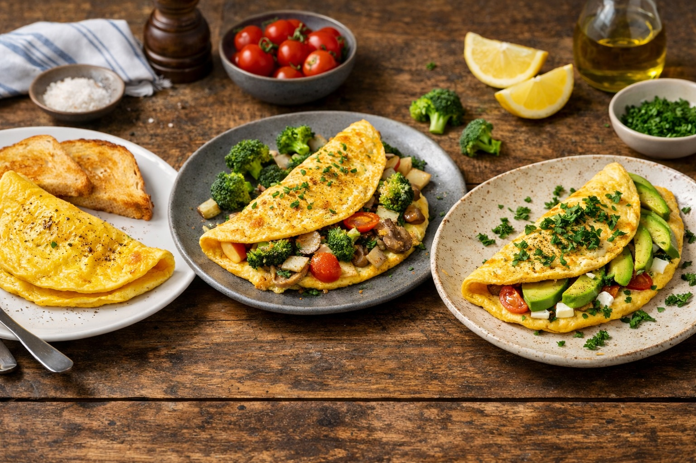

Whole Foods Recipes: Simple Omelets
Last updated: March 2026

A fast whole-food meal built from eggs and a few simple ingredients. Once the basic technique is learned, omelets become one of the easiest repeatable meals in the kitchen.
Key takeaways
- Eggs are a fast protein base — simple, filling, and easy to cook.
- Vegetables can be added easily — onion, broccoli, or other simple ingredients work well.
- Minimal equipment — one pan, a bowl, and a fork are enough.
- Three simple versions — classic, vegetable, and Mediterranean.
Purpose
A simple whole-food egg meal that can be prepared in minutes and adjusted based on what is already in the kitchen.
Basic method
- 2–3 eggs
- 1 tsp olive oil or butter
- Salt
- Black pepper (optional)
- Heat a pan over medium heat.
- Add olive oil or butter.
- If using vegetables, sauté them briefly first.
- Beat eggs in a bowl and season lightly with salt.
- Pour eggs into the pan and cook until mostly set.
- Fold and serve.
Three simple versions
1. Classic omelet
- Eggs
- Butter
- Salt
- Black pepper
2. Vegetable omelet
- Eggs
- Broccoli pieces
- Yellow onion
- Olive oil
- Salt
3. Mediterranean omelet
- Eggs
- Olive oil
- Parsley
- Avocado slices
- Salt
Notes
- Fast meal: omelets are ideal when time is limited.
- Flexible ingredients: vegetables can be adjusted based on what is available.
- Whole-food foundation: eggs make this one of the simplest high-protein meals to prepare at home.
Personal note
Simple omelets are worth learning because they turn a few basic ingredients into a complete meal without complication.
Next steps
Continue with more Whole Food Cooking.
This article focuses on general food quality and cooking with quality ingredients, not medical advice.